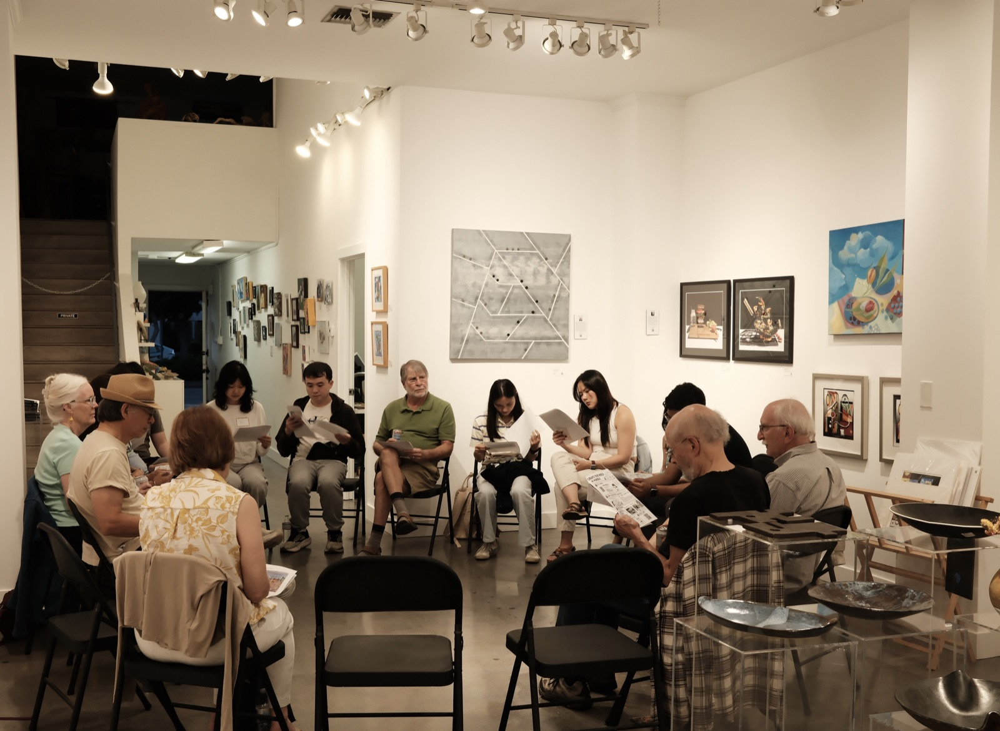
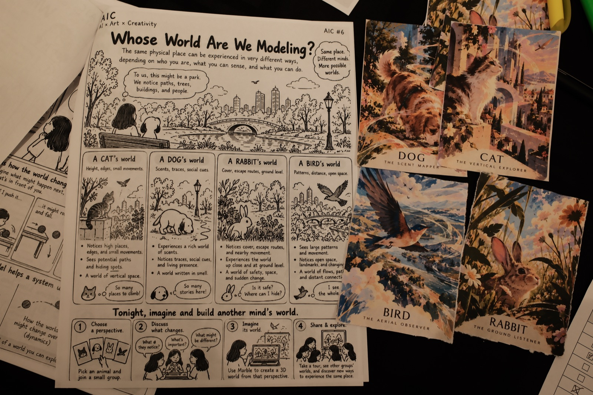
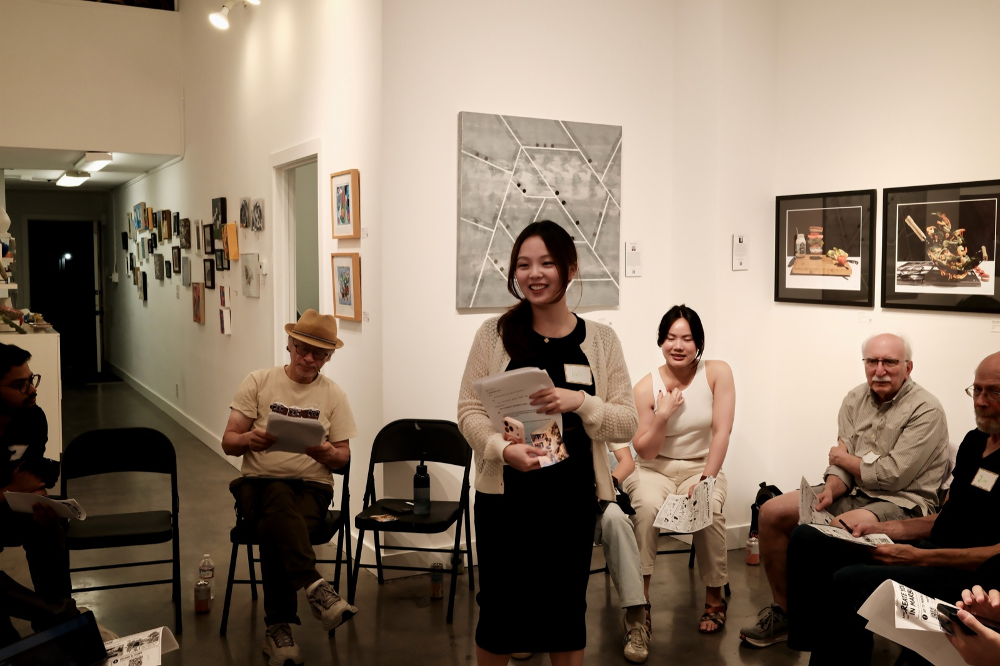

Gathering 06 · Selected Output
See the World Through Your Pet’s Eyes
What might a familiar place feel like through another animal’s eyes? At AIC #6, participants explored perception and imagination through AI worldbuilding. Step inside one of the worlds shared that evening.
Selected work · Explorable 3D world
Emotions were high at the park
Wide eyes, startled faces, and a park full of animal encounters. This playful world turns an everyday setting into an exaggerated emotional landscape. Explore it in 3D to look around from within.
Opens in Marble by World Labs.
From the evening
Different eyes. Shared worlds.
Animal perspective cards, small-group conversations, and time to create and share.


